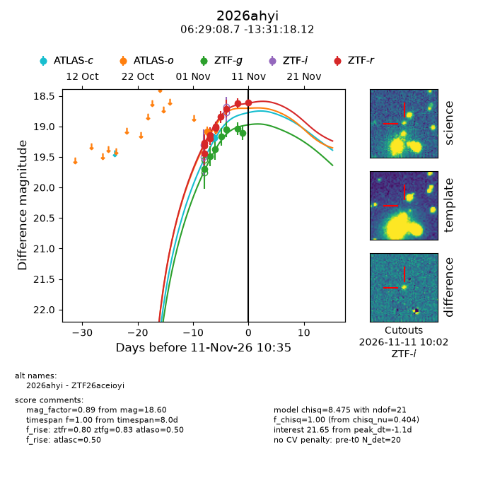
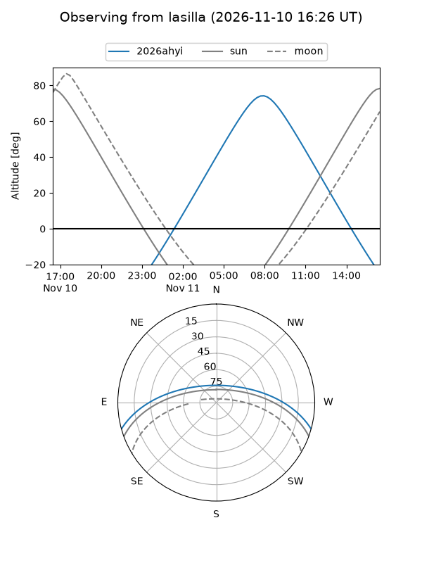
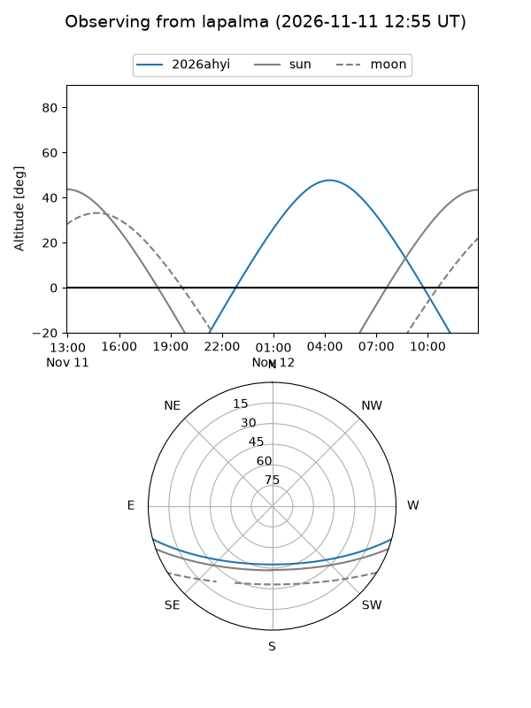
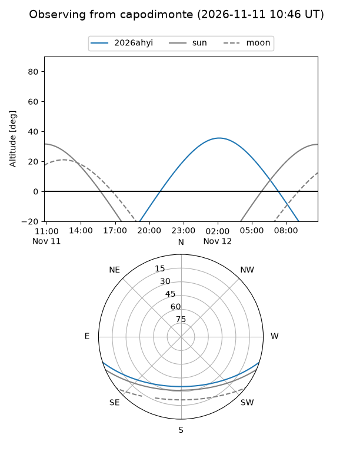
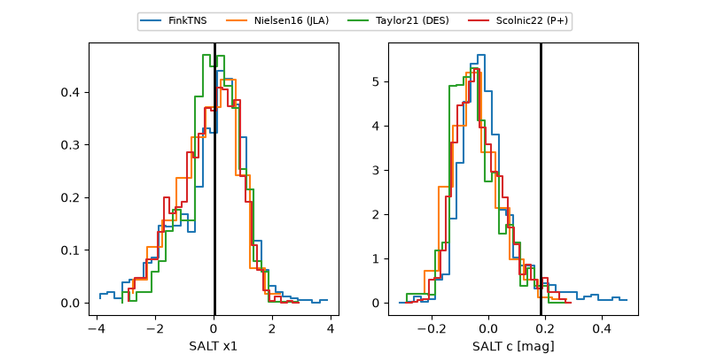

2026ahyi
Target 2026ahyi at 2026-11-11 10:37
Aliases and brokers:
FINK-ZTF: ztf.fink-portal.org/ZTF26aceioyi
Lasair-ZTF: lasair-ztf.lsst.ac.uk/objects/ZTF26aceioyi
ALeRCE-ZTF: alerce.online/object/ZTF26aceioyi
YSE-PZ: ziggy.ucolick.org/yse/transient_detail/2026ahyi
TNS name: wis-tns.org/object/2026ahyi
Direct TNS query: direct search
alt names
ZTF26aceioyi (ztf,fink_ztf)
2026ahyi (tns,yse)
Coordinates:
equatorial (ra, dec) = 97.2862,-13.52170
equatorial (HMS+DMS) = 06:29:08.68,-13:31:18.12
galactic (l, b) = (222.6103,-10.99096)
Flags:
peak dt: -1.1
Photometry:
last atlasc=19.19, atlaso=19.08, ztfg=19.10, ztfr=18.60
1 atlasc, 1 atlaso, 7 ztfg, 11 ztfr detections
Lightcurve

Visibility



Additional plots
